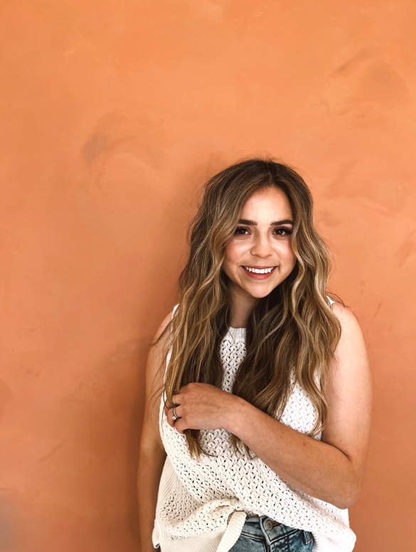

Overview
Purpose
My wife has been a hairstylist for 6 years. For the first year, she was working at a salon as an assistant, where she gained enough experience to make the decision to start getting her own clientele. Like any other entrepreneur, she was scared at the beginning, but that never stopped her from always doing her best to provide a high-quality service to any client. Since day one, her only mission is to be able to share her skills with others and help them to boost their confidence, as she always says “Being a hairstylist is not only changing the color or style of someone else’s hair, is having the opportunity of helping someone to feel better about themselves, everyone has problems, insecurities or just a bad day, but when they come to get their hair done, is my chance to help them to leave my salon not just looking different, but being different”
Her business has grown so much in the last year that I want to help her use my skills by creating a website where she can share her talent. The purpose of this website is to share her work and help her clients to make appointments with her.
Audience
The audience will be any women from Utah County that would like to get their hair done by my wife. The website will be easy to use with only 3 pages in the navigation (home, booking, and about me pages). Her current and new clients will be able to see some of her work on the home page, they will be able to make appointments for any service she provides, and they will be able to learn more about my wife’s background and story on the about me page.
Branding
Website Logo
Stephanie Aragon
-Hairstylist-
Style Guide
Color Palette
Palette URL:
https://coolors.co/palette/a37350-bd8a62-f2b23f-f3f1ed-fed0af| Primary | Secondary | Accent 1 |
|---|---|---|
| BLACK | WHITE | #F9F5EB |
Typography
Heading Font: Gruppo
Paragraph Font: Lato, sans-serif
Normal paragraph example
From a very young a age hair has always been one of my passions. I've been doing hair for 6 years now, I love to continue my education to keep up with trends. what I do doesn't feel like a job, I love putting a smile on peoples face, listening to what's going on in their life's. My job is my hobby, favorite past-time and valued quality time with people I admire and love.
Colored paragraph example
My goal is thatevery client receives an outstanding service from the time they walk in, to the time they walk out. I want my cliens to love my work so much that they would refer me to their friends, their famil, and even complete strangers who approach them anywhere. My mission is to create a place where everyone feels confortable and welcome!
Navigation
Site Map
Home
My wife has been a hairstylist for 6 years. For the first year, she was working at a salon as an assistant, where she gained enough experience to make the decision to start getting her own clientele. Like any other entrepreneur, she was scared at the beginning, but that never stopped her from always doing her best to provide a high-quality service to any client. Since day one, her only mission is to be able to share her skills with others and help them to boost their confidence, as she always says “Being a hairstylist is not only changing the color or style of someone else’s hair, is having the opportunity of helping someone to feel better about themselves, everyone has problems, insecurities or just a bad day, but when they come to get their hair done, is my chance to help them to leave my salon not just looking different, but being different”
Her business has grown so much in the last year that I want to help her use my skills by creating a website where she can share her talent. The purpose of this website is to share her work and help her clients to make appointments with her.
These are some of the pictures I plan to use for the home page


Book Now
(First Child Page)
This second page will be created to provide a space where Stephanie's clients can come and make an appointment. As the wireframe shows, this page will contain an introductory message to ensure the customer knows where to go in case they are new or current customers.
The three services that Stephanie Hair provides (Balayage, Haircuts, and Extensions) will be the three buttons that the wireframe shows.
These are some of the pictures that I am going to use when I start building the website:
Balayage

Haircuts

Extensions

About Me
(Second Child Page)
This third page will be used to introduce Stephanie to new clients, it will be a page where she can share his love and passion for being a hairstylist.
It will mostly include two paragraphs with a little background and her mission and vision. This will be some of the text that I am going to include and the picture and planning to use for this page.
Get to know me!
From a very young a age hair has always been one of my passions. I've been doing hair for 6 years now, I love to continue my education to keep up with trends. what I do doesn't feel like a job, I love putting a smile on peoples face, listening to what's going on in their life's. My job is my hobby, favorite past-time and valued quality time with people I admire and love.
My goal is thatevery client receives an outstanding service from the time they walk in, to the time they walk out. I want my cliens to love my work so much that they would refer me to their friends, their famil, and even complete strangers who approach them anywhere. My mission is to create a place where everyone feels confortable and welcome!
Wireframes
Home

Booking

About Me